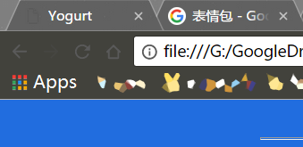
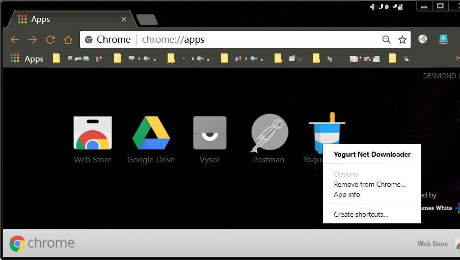
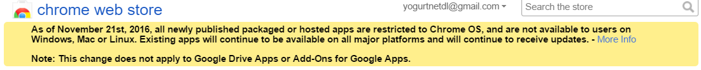

Yogurt FAQ
FAQ
Q: How does this extension work? 
This extension mimicks the browsering activity of users to decrpyt the address of video streams and provides the address to user for download.
Her core was based on a Python package named you-get https://github.com/soimort/you-get
We intergrated the package on our remote server so we can share it with everyone.
You don't need to know anything about programming and we keep you updated with the latest strategies of decrytions from you-get.
Q: I cannot find my app after installation!
Here you should find the App icon on the top left corner of your Chrome browser

In addtion, you can sent a shortcut of Yogurt to your desktop by right clicking on the icon.

Q: Why cannot I find it in Chrome App Store?
Unfortunately, due to the my procrastination, the Chrome app market is now no longer accepting new apps when this extension is developed.

Q: Chrome prompted that this extension may damage the computer. Is this program really not a virus?
Please
Check the source code here https://github.com/yogurtNetDL/yogurt_chrome_app
In addition, because this application needs to communicate with internet to download videos, some basic permissions of Chrome.Socket were required. But this application can only exchange data with your network, it will not take the initiative to add / modify / delete any data on your computer. Downloaded video files are also delivered locally via Chrome's download function.
Q: Is it illegal to download videos using this app?
MIT Licenses
THE SOFTWARE IS PROVIDED "AS IS", WITHOUT WARRANTY OF ANY KIND, EXPRESS OR IMPLIED, INCLUDING BUT NOT LIMITED TO THE WARRANTIES OF MERCHANTABILITY, FITNESS FOR A PARTICULAR PURPOSE AND NONINFRINGEMENT. IN NO EVENT SHALL THE AUTHORS OR COPYRIGHT HOLDERS BE LIABLE FOR ANY CLAIM, DAMAGES OR OTHER LIABILITY, WHETHER IN AN ACTION OF CONTRACT, TORT OR OTHERWISE, ARISING FROM, OUT OF OR IN CONNECTION WITH THE SOFTWARE OR THE USE OR OTHER DEALINGS IN THE SOFTWARE.
In human language: you are resposible for yourself.
Email yogurtNetDL@gmail.com